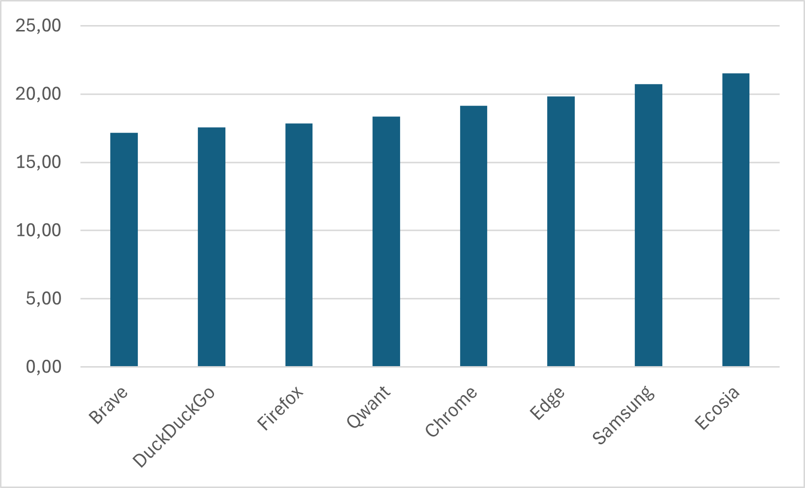
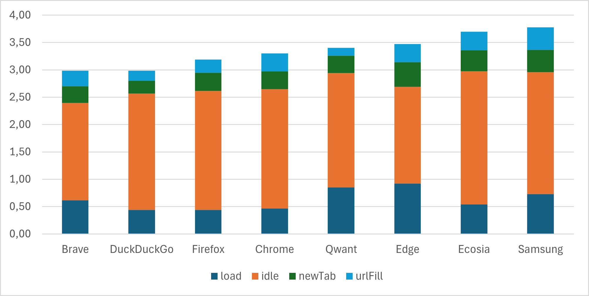
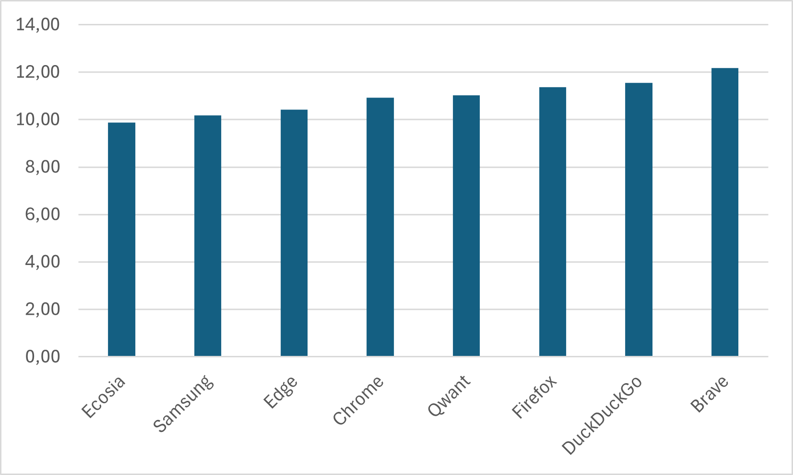
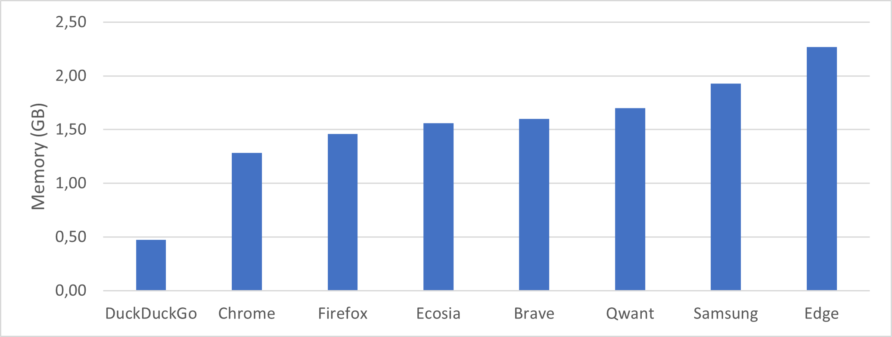
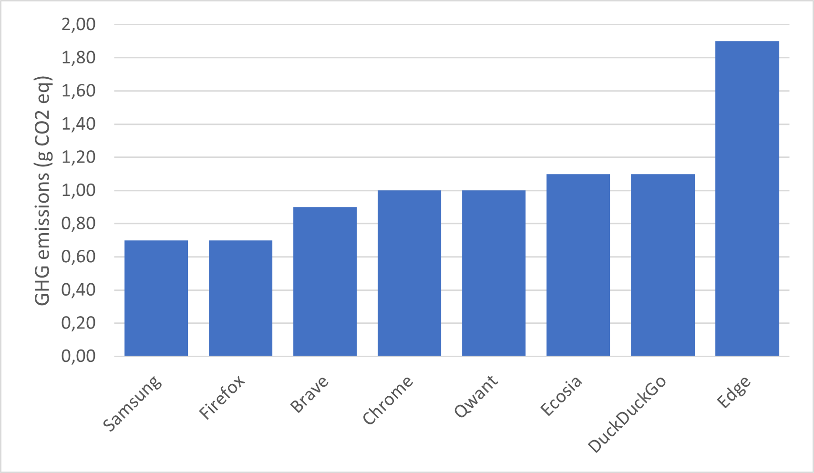
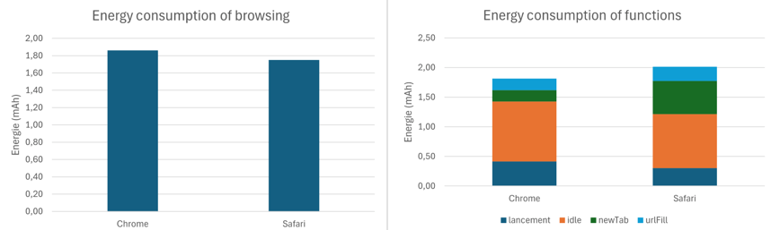

The web browser is the most important tool on a mobile device. It is the engine that drives Internet browsing. Not just for websites, but now also for new types of applications based on web technologies (progressive web app, games, etc.).
On 14 November 2023, Brave announced on the X social network that its browser would consume 40% less power than Chrome by blocking ads and trackers used to collect data on users.

For this latest edition of our rankings, the last of which dates back to 2021, we have chosen to compare 8 web browsers: Brave, DuckDuckGo, Chrome, Ecosia, Edge, Firefox, Samsung and Qwant.
| For each of these applications measured on a Galaxy S10 smartphone (Android 12), the scenarios integrating the browser functionalities were carried out using our Greenspector Test Runner, which enables automated tests to be carried out. As a reminder, here is the measurement scenario used for each of the browsers: – Browser launch + idle – Opening a new tab – Writing the URL in the search bar – Loading the website + idle These last 3 steps are repeated for 4 different websites with different functionalities and models. |
Energy consumption entire journey (mAh)

The average power consumption is 19 mAh. As a reminder, the average for the 2021 ranking was 49mAh, but the measurements were taken on a Samsung Galaxy S7, which partly explains the difference in consumption.
Here’s how it compares with last year.
| 2024 Ranking | 2021 Ranking | 2020 Ranking | Changes since the last edition | |
| Firefox | 1 | 6 | 7 | +5 |
| Brave | 2 | 2 | 5 | = |
| DuckDuckGo | 3 | 1 | 2 | -2 |
| Qwant | 4 | 8 | 8 | +4 |
| Chrome | 5 | 4 | 3 | -1 |
| Edge | 6 | 7 | 6 | +1 |
| Samsung | 7 | 5 | 4 | -2 |
| Ecosia | 8 | 3 | 1 | -5 |
Firefox is the best solution in terms of energy consumption, according to our comparison of the whole course.
The most popular browsers are Firefox, Chrome, Samsung and Edge. The other so-called eco-friendly browsers – Brave, Duck Duck Go and Qwant – are at the top of the list, but Ecosia offsets this trend by coming bottom of the table.
This total energy consumption can be assessed and analysed in 2 areas: pure browsing energy consumption and energy consumption linked to browser functions.
Navigation energy consumption
Browsing is the consumption associated solely with viewing the page (no account is taken of the launch of the browser, functionalities, etc.).

The majority of browsers use the Blink rendering engine (a component used to present a web page), with the exception of Firefox, which uses Gecko. We can see that Firefox is the browser that consumes the least and seems to have made efforts in this direction, as the rankings show a real improvement since the previous ranking in 2021, when it was in second-to-last place. Duck Duck Go, on the other hand, has fallen from first place to 7th.
Energy consumption of functions
Features include browser states such as idle times, browser launch and URLs written to the navigation bar.

It can be seen that the energy consumption rankings for the features change from those for total energy. Duck Duck Go is the most energy-efficient, thanks to the fact that it launches the browser and writes URLs more sparingly than its equivalents.
Edge, on the other hand, has features that consume a lot of energy, but its pause stage when the browser opens means that it consumes very little. Edge has a random wallpaper, as does Brave, as seen below. Although the image makes launching the browser more cumbersome, it is generally darker than the simple clear screen of other browsers. The device being measured, the Galaxy S10, has an OLED screen and consumes less power when displaying dark pixels, as is the case here, which explains the sobriety of the pause stage.

Autonomy

Autonomy is the number of hours that the user can surf before the battery is completely discharged. The ranking changes little from that for energy, since autonomy is directly linked to energy but also to the performance of the stages of the journey.
We can see that autonomy can vary by around 2 hours 20 minutes between the most energy-hungry browser (Ecosia) and the least energy-hungry (Brave).
Volume of data exchanged (MB)

The biggest impact in terms of data transfer is when the website is loaded for all browsers, which is consistent with the fact that displaying a site requires a large number of files to be loaded.
For Edge, launching the browser is the 2nd most data-intensive stage, consuming an average of 2.7 MB. This is mainly due to the loading of the wallpaper, which changes every day.
Brave stands out for not transferring any data when opening a new tab or writing a URL.
Firefox and Samsung are not the lightest in terms of the volume of data transferred during non-browsing stages, but they load less data when different websites are displayed. These browsers may block a number of scripts (third-party services, advertising, etc).
Memory consumed (RAM) by the browser process (GB)
Optimising memory management in digital services is essential. Even if its variations do not directly affect energy impact, their importance cannot be overlooked. The consequences of over-consumption on smartphones already loaded with memory or on older models can cause instabilities and application conflicts. From an ecological point of view, this can encourage users to change their smartphone prematurely for a more powerful model, thereby influencing their environmental footprint.

The variation ranges from 500 MB to 2.3 GB (i.e. around a quarter of the Samsung Galaxy S10’s RAM, which is 8 GB).
Let’s take a closer look at the behaviour of the memory following the sequence :
- Browser launch
- Browser inactivity
- Browsing (Average memory consumption)
- New tab opening
- URL writing
- Website display
- Inactivity
- Inactivity following browsing

When the browsers are launched, the median memory usage is 620 MB. Edge, as in the previous edition, consumes more at 929 MB (+10.2% compared with 2021).
If the browser is left inactive, memory consumption for most browsers remains fairly stable. Which is quite good and normal. On the other hand, Edge and Qwant show a sharp increase in memory consumption.
Then, when a new browser tab is opened, the memory consumed increases significantly. For some, this can be explained by the memory used by the browsing engines to transfer and display news or other favourite sites. Tab management is also a factor. Duck Duck Go is the only browser to display stable memory consumption throughout the user experience.
Performance
We measured the time taken to write the URL in the address bar.

This difference in performance can be explained by a number of factors: network exchanges during data entry (auto-completion), processing during data entry, searching the database for known addresses, etc. In the end, it will take users varying amounts of time to access the site.
Environmental impact
The environmental impact is calculated according to different emission factors: the energy consumed and the wear and tear on the battery, the impact of the network and that of the server depending on the amount of data transferred. The impact presented in terms of greenhouse gas emissions is unitary to the route presented at the beginning of the article:
- Launch browser + idle
- Open a new tab
- Enter the URL in the search bar
- Load website + idle
These last 3 steps are repeated for 4 different websites with different functionalities and models.

Samsung and Firefox emit the least CO2eq due to the low data exchange throughout the Samsung journey and Firefox’s low energy consumption.
Conversely, Edge is the browser with the highest impact due to its very high data transfers.
And what does it look like on iOS?
On iOS, the main browsers are :
- Safari: the default browser on iOS devices developed by Apple
- Chrome: also available on iOS
It is important to note that although other browsers are available, they often use the WebKit rendering engine, the same engine as Safari, due to Apple’s restrictions on third-party rendering engines.
For each of these applications measured on an iPhone 14 smartphone, the scenario is the same as that carried out on Android.
The energy consumption can be assessed and analysed in 2 areas: energy consumption for pure browsing and energy consumption linked to browser functions.
Energy consumption of functions and browsing

Safari consumes more energy on average when opening a new tab than Chrome. However, Google’s browser has a much higher average power consumption when browsing than Safari.
Volume of data exchanged (KB)

There is a high volume of data exchanged here, for both browsers, but not at the same stages. Chrome has a greater impact at launch and during the pause that follows, while Safari transfers almost all of its volume during the writing of the URL in the address bar.
The launch stage is used to measure the amount of data sent from the launch of the application, which has been closed until the last element displayed to the user. Here, the large amount of data transferred during the pause is potentially due to processes initialising when the browser is launched.
For Safari, it’s the url writing stage that causes a lot of data exchange. When a URL is entered, some browsers anticipate the loading of resources linked to the requested page. This involves suggesting search results and auto-completion, retrieving IP addresses even before the user has validated the URL, and even pre-loading site content to improve browser performance.
This transferred data also comes from analytics scripts that send information on traffic and user behaviour for monitoring and marketing purposes.
Environmental impact
Safari’s environmental impact is 50g eqCO2 higher than Chrome’s. This is due to the large amount of data that Safari transfers when writing the URL to its search bar.

Promising ideas and initiatives
While some browsers are already making a name for themselves with their energy-efficiency and optimised data management, web browsing is still an activity with a significant environmental impact. Fortunately, initiatives are emerging to transform this experience in depth, whether through tools designed to reduce the carbon footprint of web users, low-tech design concepts, or integrated features from major publishers.
Among these, extensions such as Low Web Extension This tool works by limiting the unnecessary consumption of resources by websites, in particular by blocking non-essential scripts, heavy images or overly greedy fonts.
Reflections on browser design, such as those mentioned in an article on low-tech borwsers, suggest rethinking interfaces to make them simpler and more sober. These concepts include the reduction of superfluous functionalities, as well as the addition of educational tools such as gauges to monitor resource consumption or options to limit usage time.
Major browser publishers are also exploring solutions. Microsoft has begun discussions to integrate digital sobriety indicators into its tools for developers, enabling the impact of websites to be measured in real time in DevTools. For its part, Mozilla is considering an Eco Mode for Firefox, which could include a ‘low power’ mode, carbon footprint alerts or online eco-gesture recommendations.
Conclusion
On Android, Firefox has the lowest overall energy consumption and is the browser that transfers the least data. Duck Duck Go is more restrained when it comes to features and uses less RAM than its rivals.
On iOS, Chrome is the browser that consumes less energy than Safari overall. Safari transfers more data during the URL writing stage, whereas Chrome generates a lot of data transfer when it is launched.